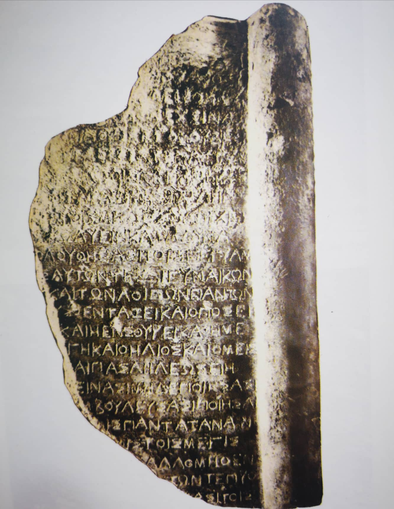

ვანის დეკრეტიThe Decree of Vani
ვანის დეკრეტი
The Decree of Vani
შინაარსი / Summary
დეკრეტი Decree
კრიტიკული გამოცემა Interpretive Edition
ὁ σώ φρων ? –ος ὠ
τῷ παντὶ ὅσι ια
ἅπτοντα
ν ὁ τάφος σ
5ἀπολειφθῆναι
πον ἔχειν α
ουσι τοὺς ἐκγόνους καὶ
ποιοῦντας τοὺς τὴν αὐτῶν
ους ἐν τοῖς γεγραμμέ νοις
10χαραχθεῖσα καὶ τὴν στήλην
μηδὲ ...ανοις μηδὲ ἀνεπιχειρήτοις
κωλύειν κατὰ δύνα μιν
ἀκολουθήσασι τοῖς γεγραμμένοις
ς αὐτῶν τε καὶ γυναικῶν
15καὶ τῶν λοιπῶν πάντων
ο]υς ὁ ἐν τάξει καὶ ὁ ποσεῖ
καὶ ἡ ἐν Σούρι καθημέ νη στήλη
ἡ Γῆ καὶ ὁ Ἥλιος καὶ ὁ Μείς
καὶ πᾶσαι ἵλεως εἴη
20μηδὲ τείνασι μηδὲ ποιήσασι
συμβουλεύσασι ποιῆσαι
οις πάντα τ(ἀ)ναν
θεοῖς τοῖς μεγίσ τοις
ς ἄλλο μηθὲν
25τῶν τε προ
ἀσίτοις
დიპლომატიური გამოცემა Diplomatic Edition
Ο ΣΩ ΦΡΩΝ?–ΟΣΩ
ΤΩ ΠΑΝΤΙ ΟΣΙ ΙΑ
ΑΠΤΟΝΤΑ
Ν Ο ΤΑΦΟΣ Σ
5ΑΠΟΛΕΙΦΘΗΝΑΙ
ΠΟΝ ΕΧΕΙΝ Α
ΟΥΣΙ ΤΟΥΣ ΕΚΓΟΝΟΥΣΚΑΙ
ΠΟΙΟΥΝΤΑΣΤΟΥΣΤΗΝ ΑΥΤΩΝ
ΟΥΣ ΕΝ ΤΟΙΣ ΓΕΓΡΑΜΜΕ ΝΟΙΣ
10ΧΑΡΑΧΘΕΙΣΑ ΚΑΙ ΤΗΝ ΣΤΗΛΗΝ
ΜΗΔΕ ΑΝΟΙΣ ΜΗΔΕ ΑΝΕΠΙΧΕΙΡΗΤΟΙΣ
ΚΩΛΥΕΙΝ ΚΑΤΑ ΔΥΝΑ ΜΙΝ
ΑΚΟΛΟΥΘΗΣΑΣΙ ΤΟΙΣ ΓΕΓΡΑΜΜΕΝΟΙΣ
Σ ΑΥΤΩΝ ΤΕ ΚΑΙ ΓΥΝΑΙΚΩΝ
15ΚΑΙ ΤΩΝ ΛΟΙΠΩΝ ΠΑΝΤΩΝ
Ο]ΥΣ Ο ΕΝ ΤΑΞΕΙ ΚΑΙ Ο ΠΟΣΕΙ
ΚΑΙ Η ΕΝ ΣΟΥΡΙ ΚΑΘΗΜΕ ΝΗ ΣΤΗΛΗ
Η ΓΗ ΚΑΙ Ο ΗΛΙΟΣ ΚΑΙ Ο ΜΕΙΣ
ΚΑΙ ΠΑΣΑΙ ΙΛΕΩΣ ΕΙΗ
20ΜΗΔΕ ΤΕΙΝΑΣΙ ΜΗΔΕ ΠΟΙΗΣΑΣΙ
ΣΥΜΒΟΥΛΕΥΣΑΣΙ ΠΟΙΗΣΑΙ
ΟΙΣ ΠΑΝΤΑ ΤΝΑΝ
ΘΕΟΙΣ ΤΟΙΣ ΜΕΓΙΣ ΤΟΙΣ
Σ ΑΛΛΟ ΜΗΘΕΝ
25ΤΩΝ ΤΕΠΡΟ
ΑΣΙΤΟΙΣ

Decree of Vani, 1985
{'default': 'გონიერი, ან ზომიერი. ყოველმხრივ წმინდა, სუფთა. ხელი მოჰკიდა, წამოიწყო (რაიმე საქმე).\n საფლავი, სამარხი. ჩამორჩენა. აქვს. ჩამომავლებს და, მათგან, ვინც გააკეთა (რაღაცა მდედრ. სქესის, სტელა?),\n დაწერილში (დოკუმენტში, რომელიც შეიძლება საბრალდებულოც იყოს), ამოჭრილი (დაწერილი) და სტელა.\n არც ვიღაცაები და არც უძლეველნი (ან ისინი, ვისაც ვერ მიუდგები, ვისთანაც ვერაფერს გააწყობ).\n დააბრკოლონ, რაც შეიძლება. მისდიონ დაწერილს (დაწესებულს). მათგანაც და ქალთაგანაც. და ყველა დანარჩენთაგან,\n ვინც ჩაურთავს (ჩაუმატებს) და ვინც დათვლის (იანგარიშებს). და სურიში დადგმული სტელა. დედამიწა და მზე და მთვარე.\n და ყველანი (მდედრ. სქესის). მოწყალე იყოს. არც მათ, ვისაც გუნებაში ჰქონდათ და არც მათ, ვინც გააკეთეს. მოთათბირეებს\n გაუკეთეს (ან - მოთათბირეებს). ყველაფერი ამის საწინააღმდეგო. დიდ ღმერთებს. თუმცა არაფერი.\n (ნაწილაკებია მხოლოდ). მშივრებს (ან - ყველა მათ). Translation by Tinatin Khaukhchishvili: “Sensible, or moderate... Completely pure, clean... laid one’s hand on... started (some kind of job)... grave, tomb... backwards... To their successors... And of those who made it (some stela of a female gender?) in a written document (possibly a formal complaint)... cut out (written) and stela... Neither some people, nor the invincible (or the ones who cannot be negotiated with) should be impeded...\n They had better follow the written (rule)...\n Both from them and from women… and all the others who will add and who will count…. And the stela erected in Suri…. The Earth and the Sun and the Moon… and may all (female gender) be merciful... Neither those who had it in mind and those who take action... All the opposite was done against the negotiators... The great gods … Yet, nothing (only particles)… to the hungry (or all of them)'}
{'ka': 'ვანის არქეოლოგიური ექსპედიციის მუზეუმში დაცულია 1985 წელს მოპოვებული ბრინჯაოს ფილის ფრაგმენტი, ფილის მარჯვენა ნაწილი, დასაწყისისა და დაბოლოების გარეშე. ფილა, როგორც ჩანს, სადა არ ყოფილა, შემორჩენილია მარჯვენა კიდეზე ნახევარკოლონის ფორმის ჩარჩო. ფრაგმენტზე გაირჩევა 26 სტრიქონი, აქედან 11-26 სტრიქონები არ იწვევს ეჭვს, I ათი სტრიქონი ხანძრისგან არის ძლიერ დაზიანებული, ამდენად, ბევრად უფრო რთული გასარჩევად. ცალკეული ნაწყვეტების მიხედვით ტექსტი არის სატაძრო საკანონმდებლო დოკუმენტი, რომელიც შეიცავს გარკვეულ პირობებს: უნდა იყვნენ ყოველმხრივ წმინდა, რომ წამოიწყონ რაიმე საქმე.\n განწმენდილი იყვნენ საფლავთან შეხების შემთხვევაშიც და ეს ეხება მათაც და მათ ჩამომავლებსაც. ეს დადგენილება ამოჭრილია სტელაზე და მიმართულია, სხვათა შორის, იმ პირთა წინააღმდეგ, ვისთანაც\n ვერაფერს გააწყობ ამ აკრძალვის გარეშე. ძეგლი მოუწოდებს თავის მრევლს, მამაკაცებსაც (?) და ქალებსაც (ესენი უთუოდ ერთი წრისანი არიან) და ყველა დანარჩენთ (ეს "დანარჩენები" კონტექსტით სხვა ფენის\n წარმომადგენლები უნდა იყვნენ) მისდიონ ამ დადგენილებას. დადგნილებაში ჩამატებისა და აღრიცხვის შესახებ კიდევ საგანგებო პუნქტია შეტანილი. სტელა აღნიშნული დადგენილებით აღმართულია სურიში. მოუწოდებენ\n ღმერთებს: დედამიწას, მზეს, მთვარეს; რომელიღაცა ერთს ღმერთთაგან შესთხოვენ, იყოს მოწყალე. ეს მოწყალება არ ვრცელდება მათზე, ვინც განიზრახა ან ჩაიდინა უკეთური (ე. ი. ამ დოკუმენტით აღკვეთილი)\n საქმე. მოთათბირეთაგან დადგენილია, ვინც ამის საწინააღმდეგოს გააკეთებს, მას ნურც დიდი ღმერთები უშველიან და ყოველგვარი უბედურება დაატყდეს მას თავს. წარწერაში აღსანიშნავია გეოგრაფიული სახელი "სური" (იგივე წერილობითი წყაროების "სურიონ//სურიუმი"), რაც არის ვანის ელინისტური დროის სახელწოდება, და დიდი ღმერთების ტრიადა (დედამიწა, მზე, მთვარე),\n რომელთაც აღიარებდნენ სურიში. დათარიღება: ასოთა მოხაზულობისა (Ω, Σ, Μ, Β, Ρ, Ε, Γ ...) და ენობრივი ნორმების (μηθέν, ἀνεπιχείρητος) მიხედვით წარწერა ძვ.წ. III ს-ით თარიღდება. არქეოლოგიურად - ფრაგმენტი გვიანელინისტურ ფენაშია მოპოვებული.', 'en': 'A comment by Tinatin Kaukhchishvili: The Archaeological Museum in Vani preserves a fragment of a Bronze plaque unearthed in 1985. The right part of the plaque has no edges. The plaque had not obviously been plain, as is evidenced by the presence of a fragment of a frame shaped like a semi-column.\n It is possible to distinguish 26 lines from which the 11th-26th lines present no doubt. The first 10, however, are damaged by fire so that it is hard to figure out what it really says. According to the bits and pieces available, the text seems to be an ecclesiastical legal document, which poses certain conditions:\n the one who intends to start a job (any job) should be fully pure. They should be purified even before touching a grave and this applies to them as well as to their offspring. This statement is engraved on a stela and is addressed against those who, by the way, cannot be dealt with without this prohibition. The inscription calls parishioners,\n men (?) as well as women (they obviously belong to the same circle) and all the others (these “others” must represent a different class by their context) should follow this ordinance. There is an additional point in the ordinance about the manner of adding and monitoring. The stela with the aforementioned ordinance is erected in Suri. They call the gods: earth, the Sun and the moon;\n They ask one of the gods to be merciful. This mercy does not apply to those who intended or committed evil (an act forbidden by this document).\n The counselors agreed that whomsoever do the contrary, the great gods will not help them and they will go through all kinds of tribulations. It is noteworthy that the inscription mentions the geographic name “Suri” (the same as the written sources call “Surion/Surium”) that is the Hellenistic name for Vani, also the Triad of the great gods (Earth, the Sun and the Moon) that were worshipped in Suri. Date: According to the outlines of letters (Ω, Σ, Μ, Β, Ρ, Ε, Γ ...) and the lingual norms (μηθέν, ἀνεπιχείρητος) the inscription refers to the 3rd century B.C. Archaeologically the fragment was found in the layer dated back to the late Hellenistic period.'}
<div type="edition" xml:lang="ka" ana="mtavruli" xml:space="preserve">
<ab>
<lb n="1"/><w lemma="ქრისტე"><expan><abbr>ქ</abbr><ex>რისტ</ex><abbr>ე</abbr></expan></w>
<w lemma="განსუენება"><expan><abbr>გა</abbr><ex>ნ</ex><abbr>ო</abbr><ex>ჳ</ex><abbr>ს</abbr><ex>უ</ex><abbr>ენე</abbr></expan></w>
<w lemma="სულ">სოჳ<lb n="2" break="no"/>ლსა</w>
<name nymRef="ვაჩა">ვაჩაჲს<lb n="3" break="no"/>ასა</name>
<name nymRef="გურა"><expan><abbr>გო</abbr><ex>ჳ</ex><abbr>რაჲ<lb n="4" break="no"/>სასა</abbr></expan></name>
<name nymRef="მირა"><expan><abbr>მ</abbr><ex>ი</ex><abbr>რა</abbr><ex>ჲ</ex><abbr>ს</abbr><ex>ა</ex><abbr>ს</abbr><ex>ა</ex></expan></name>
</ab>
</div>